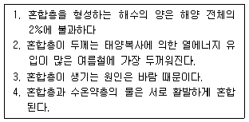
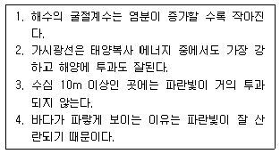
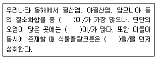
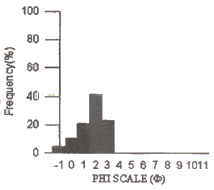

해양조사산업기사 (2011-06-12 기출문제)
1과목: 물리해양학
1. 염분과 염소량의 관계식으로 옳은 것은?
- 염소량 = 0.03+1.8⑤×염분량
- 염소량 = 0.03×1.8⑤×염분량
- 염분 = 1.80655×염소량
- 염분 = 0.03×1.80655×염소량
(정답률: 93%)

2. 평형조석론(The Equilibrium Theory of Tides)에 대한 설명 중 옳은 것은?
- 대조와 소조현상을 설명할 수 있다.
- 전 세계의 조차는 모두 같다.
- 조석파의 전파를 설명할 수 있다.
- Laplace의 이론이다.
(정답률: 88%)
3. 해양의 염분을 나타내는 단위로 천분율인 ‰을 사용하지 않고 psu를 사용하는데 이는 어떠한 방법으로 구하는가?
- 용존물질의 전량 직접 측정
- 전기전도도 측정
- 염소량 적정
- 해수의 굴절률 측정
(정답률: 93%)
4. 만내에서 발생하는 부진동의 주기는?
- 만의 길이에만 의존
- 만의 폭에만 의존
- 만의 길이와 폭에만 의존
- 만의 길이와 폭, 깊이에 의존
(정답률: 87%)
5. 대양에서는 바람의 영향이나 밀도의 차이에 의해서 해수가 움직이는 것으로 알려져 있다. 다음 중 밀도차에 의하여 움직이는 것으로 가장 거리가 먼 것은?
- 표층수
- 중층수
- 심층수
- 저층수
(정답률: 90%)
6. 바다에서 발생하는 풍랑에 대한 설명 중 옳은 것은?
- 풍랑, 너울은 직접 바람에 의해서 일어난다.
- 너울은 바람이 불지 않는 해역에도 전파된다.
- 너울과 풍랑의 진행속도는 수심과 관계없이 일정하다.
- 풍랑은 진행파이며 너울은 정상파이다.
(정답률: 77%)
7. 염분이 높아짐에 따라 증가하는 것은?
- 비열
- 빙점
- 밀도
- 열전도율
(정답률: 87%)
8. 혼합층(표층)에 대한 아래의 설명 중에서 옳은 사항으로만 짝지은 것은?

- 1, 2
- 2, 3
- 3, 4
- 1, 3
(정답률: 83%)
9. 대량의 표층수가 냉각, 침강하여 심층수로 변하는 해역은?
- 북태평양 북부해역
- 북대서양 북부해역
- 인도양 북부해역
- 알래스카 북부해역
(정답률: 91%)
10. 조류의 M2분조와 S2분조를 분리하고자 할 때 소요되는 최소한의 관측 기간은?
- 7일간
- 15일간
- 23일간
- 30일간
(정답률: 93%)
11. 천해파 또는 심해파의 전파속도와 관련이 없는 것은?
- 진폭
- 파장
- 주기
- 수심
(정답률: 76%)
12. 해양에 투과된 햇빛에 대하여 나타나는 현상에 대한 설명이 옳은 것만으로 짝지어진 것은?

- 1, 2
- 2, 4
- 3, 4
- 2, 3, 4
(정답률: 76%)
13. 태평양 북적도 해류의 방향은?
- 서에서 동으로 향한다.
- 북에서 남으로 향한다.
- 남에서 북으로 향한다.
- 동에서 서로 향한다.
(정답률: 76%)
14. 물리해양학의 시조라고 불리기도 하며, 항해일지의 자료를 분석하여 바람과 해류도를 작성한 해양학자는?
- M.F. Maury
- J. Cook
- T.H. Huxley
- F. Nansen
(정답률: 85%)
15. 대양의 염분에 관한 설명 중 틀린 것은?
- 평균 염분은 열대, 한대, 온대 해역 중 한대해역이 가장 높고, 열대 해역이 가장 낮다.
- 북대서양 표층수의 염분이 가장 높다.
- 적도 해역과 열대, 아열대 해역에서는 수심 600~1000m 사이에 염분 극소층이 있다.
- 대양에서 염분의 연변화는 일반적으로 0.5‰을 넘지 않는다.
(정답률: 85%)
16. 우리나라 서해안은 대체로 하루에 몇 차례 만조가 나타나는가?
- 1회
- 2회
- 3회
- 4회
(정답률: 95%)
17. 태평양의 쿠로시오와 대응할 수 있는 대서양의 난류는?
- 북대서양 해류
- 래브라도 해류
- 멕시코 만류
- 그린랜드 해류
(정답률: 93%)
18. 해류관측방법에 관한 설명 중 옳은 것은?
- 알고스(Argos) 부이를 이용하는 것은 오일러(Euler) 방법이다.
- 태평양에서는 라그랑즈(Largrange)방법이 좋으나 대서양은 오일러 방법이 좋다.
- 심해 중립부이를 이용하는 것은 오일러 방법이다.
- 도플러효과(Doppler effect)의 원리를 이용하면 층별 유속관측을 할 수 있다.
(정답률: 98%)
19. XBT는 주로 무엇을 측정하는 기구인가?
- 염분
- 수온
- 투명도
- 해류
(정답률: 75%)
20. 난류와 한류의 특성 비교 설명 중 옳은 것은?
- 난류는 영양염이 적으며 투명도가 낮다.
- 한류는 영양염이 적으며 플랑크톤도 적다.
- 난류는 용존산소량이 적고 생산력도 작다.
- 한류는 대개 저위도에서 고위도를 향하여 흐른다.
(정답률: 67%)
2과목: 화학해양학
21. 해양환경수질등급 기준에서 다음 중 해역에서의 농도규정이 틀린 것은?
- 6가 크롬 : 0.⑤㎎/ℓ 이하
- 카드뮴 : 0.01㎎/ℓ 이하
- 시안 : 0.0㎎/ℓ 이하
- PCB : 0.00⑤㎎/ℓ 이하
(정답률: 63%)
22. 해수에서 입자성 물질과 용존성 물질을 구분하는데 표준으로 쓰이는 여과지의 구경(pore size)은?
- 0.20㎛
- 0.45㎛
- 1.0㎛
- 2.5㎛
(정답률: 90%)
23. PCB 특성에 관한 설명 중 틀린 것은?
- PCB는 변압기나 콘덴서 제조시 가소제로 사용한다.
- 지속성이 매우 길다.
- 독성이 매우 강하다.
- 해수 중에 잘 용해된다.
(정답률: 95%)
24. 해수의 화학적 성분 중 미량금속을 분석할 때 일반적인 방법으로 많이 사용되는 것은?
- 원자흡광광도계
- 동위원소 희석질량분석법
- 형광 X선법
- 용출 전압전류법
(정답률: 85%)
25. 해양에서 주요 영양염류가 아닌 것은?
- 아질산염
- 황산염
- 인산염
- 암모니아
(정답률: 67%)
26. 다음 중 Alkalinity에 감소영향을 주는 반응은?
- 질산화반응(NH4++2O2→NO3-+H2O+2H+)
- 탈질산화반응(5CH2O+4NO3-+4H+→5CO2+2N2+7H2O)
- 황산염환원반응(SO42-+2CH2O+H+→2CO2+HS-+2H2O)
- 탄산염용해반응(CaCO3+CO2+H2O→Ca2++2HCO3-)
(정답률: 59%)
27. 해수 중 암모니아 질소 측정용 시약이 아닌 것은?
- 차아염소산나트륨
- 몰리브덴산암모늄
- 티오황산나트륨
- 페놀
(정답률: 55%)
28. 수은 중독에 관한 설명 중 적합하지 않은 것은?
- 미나마타병이라 부른다.
- 무기수은보다 유기수은이 훨씬 독성이 강하다.
- 수은중독증상은 연골증을 나타낸다.
- 비료제조 공장에서 촉매로 사용한 수온이 해역으로 방출되어 일어난 사고이다.
(정답률: 62%)
29. pH 5인 해수를 pH 7로 증가시키면 수온이온농도(H+)의 변화는?
- 2배 증가
- 2배 감소
- 100배 증가
- 100배 감소
(정답률: 88%)
30. 담수나 해수에서 부영양화에 의한 산소고갈이 일어났을 경우 발생하는 화합물이 아닌 것은?
- 메탄
- 황화수소
- 암모니아
- 헬륨
(정답률: 90%)
31. 해수의 주성분 원소가 지닌 성질로 맞지 않는 것은?
- 해양에서 체류시간이 길다.
- 담수에 비해서 해수에서의 농도가 상대적으로 높다.
- 화학반응성이 크다.
- 육지 암석의 주성분과 다르다.
(정답률: 74%)
32. 용존산소가 완전히 소모된 저층수에서는 미생물에 의해 SO4-의 환원이 일어난다. 이 때 생성되는 것은?
- SO3-
- SO2
- H2S
- S2O3-
(정답률: 80%)
33. 일반적으로 외양역 표층에서 중금속인 Pb가 최대 농도를 보이는 주 이유는?
- 연안으로부터 외양으로 흘러들어서
- 대기로부터 유입되어서
- 열수광상의 영향 때문에
- 생물체에 의해 농축되어서
(정답률: 78%)
34. 북태평양의 수심 1km 부근에서 최대 또는 최소의 농도분포를 보이지 않는 친생물원소는?
- 용존산소
- 질산염
- 인산염
- 규산염
(정답률: 60%)
35. 대양의 평균 pH 값은?
- 약 4.0
- 약 6.0
- 약 8.0
- 약 9.0
(정답률: 90%)
36. 해양 식물플랑크톤의 유기화와 무기화과정은 Redfield 비를 이용하여 생물활동을 화학양론적으로 나타낼 수 있다. 유기물의 분해과정에서 생성되는 이산화탄소와 사용되는 산소의 분자비(용적비)를 사용하여 호흡률(RQ)을 계산하면 얼마인가?
- 0.37
- 0.58
- 0.77
- 0.98
(정답률: 93%)
37. 해양에서 부유식물이 급격히 증가하여 해수중의 CO2가 감소할 때 대기에서 이산화탄소의 공급이 뒤따르지 못하는 경우 해수의 pH는 어떻게 되는가?
- pH가 내려간다.
- 변화없다.
- 불규칙하게 변한다.
- pH가 올라간다.
(정답률: 85%)
38. 해수에 녹아 있는 주요 음이온 중 농도가 2번째 높은 것은?
- Cl-
- SO42-
- HCO3-
- Br-
(정답률: 76%)
39. 해수 중에 용해되어 있는 염류를 그 양이 많은 것부터 순서대로 배열한 것은?
- Cl, Na, SO4, Mg
- Na, Cl, Mg, SO4
- Cl, SO4, Na, Mg
- Cl, Na, Mg, SO4
(정답률: 77%)
40. 윙클러(winkler)법에 의하여 해수중에 용존산소량을 측정하고자 시료를 처리할 때 오차의 원인과 가장 거리가 먼 것은?
- 채수시 발생하는 기포
- 시료의 염분
- 시료 속에 존재하는 산화환원 물질
- 티오황산나트륨으로 적정 시 유리된 요오드의 증발
(정답률: 82%)
3과목: 생물해양학
41. 생물 두 종간에 편리공생을 할 때 상호관계는?
- 한 종은 이익을 보고 한 종은 손해를 본다.
- 한 종은 이익을 보고 한 종은 이익도 손해도 없다.
- 두 종 모두 이익을 본다.
- 두 종 모두 손해를 본다.
(정답률: 88%)
42. 해수의 염분도와 해양생물의 관계를 설명한 내용 중 틀린 것은?
- 해수의 염분도는 일반적으로 해양생물에 영향을 미친다.
- 해양생물 중에는 담수에 옮겨졌을 때 재빨리 적응하는 능력을 가진 것이 있다.
- 염분변화의 생리적 영향은 온도에 따라 다르다.
- 외양성 생물은 연안역에 서식하는 생물보다 일반적으로 염분변화에 내성이 크다.
(정답률: 87%)
43. 미역-다시마 같은 대형 갈조류에 대한 설명 중 틀린 것은?
- 부착기(holdfast)는 암반에 부착기능을 가지며 육상식물 뿌리와 같은 영양분 흡수기능은 거의 없다.
- 해조류 표면, 해조류 사이 및 바닥이 3차 공간의 서식처를 제공한다.
- 수온이 낮을수록 갈조류가 우점하고 수온이 높을수록 대체로 홍조류가 우점한다.
- 일년생으로 일 년이 지나면 시들어 죽는다.
(정답률: 60%)
44. 동물플랑크톤의 수직회유 현상에 대한 설명으로 틀린 것은?
- 식물플랑크톤을 먹기 위해 표면으로 올라온다.
- 표층의 강한 태양광선을 피하여 심층으로 내려간다.
- 적정 조도의 수층을 따라 수직 이동한다.
- 적정 온도의 수층을 따라 수직 이동한다.
(정답률: 82%)
45. 전복의 성(sex)에 대한 설명이 맞는 것은?
- 암수 딴몸이다.
- 암수 한몸이다.
- 계절에 따라 성이 바뀐다.
- 암수 개체의 성비에 따라 성이 변한다.
(정답률: 78%)
46. 해양의 육상식물(현화식물)과 해조류의 차이점에 대한 설명으로 틀린 것은?
- 육상식물은 뿌리로 영양분을 흡수하는데 비하여 해산식물은 몸 전체로 영양분을 흡수한다.
- 육상식물은 도관이 잘 발달되어 있는 반면에 해산식물은 그렇지 못하다.
- 육상식물은 잎에서 광합성을 하는데 비하여 해조류는 몸 전체로 광합성을 행한다.
- 육상식물과 해조류 모두 수분을 통해 싸앗을 맺어서 자손을 번식한다.
(정답률: 71%)
47. 다음 중 재생력이 가장 약한 동물은?
- 해면
- 플라나리아
- 불가사리
- 굴
(정답률: 83%)
48. 다음 중 해초류(seagrass)에 속하지 않는 것은?
- 거머리말
- 잘피
- 거북풀
- 모자반
(정답률: 75%)
49. 듀공(Dugong)은 해양 포유류 중 어느 종류에 속하는 가?
- 고래류
- 물개류
- 바다수달류
- 해우류
(정답률: 87%)
50. 자포동물의 특징이 아닌 것은?
- 방사상칭
- 3배엽성
- 자세포
- 폴립형
(정답률: 85%)
51. 다음 중 냉수성 어류는?
- 잉어
- 메기
- 뱀장어
- 송어
(정답률: 82%)
52. 이매패류를 마비시켜서 죽이는 대표적인 적조생물은?
- Skeletonema
- Navicula
- Ceratium
- Gonyaulax
(정답률: 81%)
53. 해수에 녹아 있는 무기 영양염류를 필수적으로 필요로 하는 생물은?
- 동물플랑크톤
- 저서동물
- 식물플랑크톤
- 어류
(정답률: 95%)
54. 다음 중 우리나라 패류 양식장에 큰 피해를 주는 동물은?
- 성게
- 해삼
- 불가사리
- 말미잘
(정답률: 89%)
55. 다음 중 광선의 영향을 가장 많이 받는 해양생물은?
- 저어류
- 부어류
- 플랑크톤
- 해산포유류
(정답률: 84%)
56. 다음 설명 ( )안에 들어갈 용어가 순서대로 옳게 나열된 것은?

- 질산염, 암모니아, 암모니아
- 질산염, 암모니아, 질산염
- 아질산염, 암모니아, 암모니아
- 암모니아, 질산염, 질산염
(정답률: 71%)
57. 하등한 생물체 가운데 광합성 능력과 먹이 섭식 능력을 모두 갖춘 생물은?
- 자가영양생물
- 공생생물
- 기생생물
- 혼합영양생물
(정답률: 89%)
58. 광합성 임계 수심(critical depth)의 설명으로 맞는 것은?
- 순생산률이 최대가 되는 깊이
- 광합성율과 호흡률이 같은 깊이
- 수층 총 생산량과 수층 총 호흡량이 같아지는 깊이
- 일반적으로 임계 깊이는 보상깊이보다 얕다.
(정답률: 85%)
59. 어류의 분류에 쓰이는 기호 중 D. Ⅻ, 10 : A. Ⅲ. 8의 의미는?
- 뒷지느러미는 10가시 12연조, 등지느러미는 8가시 3연조
- 뒷지느러미는 12가시 10연조, 등지느러미는 3가시 8연조
- 등지느러미는 10가시 12연조, 뒷지느러미는 8가시 3연조
- 등지느러미는 12가시 10연조, 뒷지느러미는 3가시 8연조
(정답률: 79%)
60. 해수의 순환이 생태계에 주는 유익성과 가장 관계가 먼 것은?
- 해수의 불균일성을 가져온다.
- 플랑크톤을 공급한다.
- 부유성 유생의 생활영역을 넓혀준다.
- 영양 물질 재공급의 역할을 한다.
(정답률: 94%)
4과목: 지질해양학
61. 육상기원 쇄설성 해양 퇴적물의 근원을 가장 잘 반영시켜 주는 것은?
- 광물 성분
- 미고생물 조성
- 퇴적물의 구조
- 유기물의 함량
(정답률: 86%)
62. 코콜리스(Coccolith)는 어떤 퇴적물을 형성하는가?
- 석회질
- 규질
- 니질
- 사질
(정답률: 83%)
63. 음향측심기는 어느 곳에 사용하는가?
- 해저지형조사
- 도서간의 측정
- 해양지각의 두께
- 해저산맥의 폭
(정답률: 92%)
64. 사주는 주로 어디에서 형성되는가?
- 연안
- 대륙붕
- 대륙사면
- 대륙대
(정답률: 83%)
65. 심해에 분포하는 생물기원 퇴적물에 관한 설명 중 틀린 것은?
- 북태평양해저를 제외한 세계의 심해저 퇴적물은 그 대부분이 생물기원이다.
- 생물기원 퇴적물을 일반적으로 심해성 “연니”라 한다.
- 연니에는 석회질 연니, 규산질 연니 등이 있다.
- 규산질 연니가 모든 심해성 퇴적물 중에 제일 많다
(정답률: 66%)
66. 지구표면의 6개의 주요 판(plate)의 명칭이 아닌 것은?
- 유라시아
- 아프리카
- 태평양
- 대서양
(정답률: 79%)
67. 탄산질 연니의 용해도와 해저면에서의 분포양상에 대한 다음 설명 중 옳은 것은?
- 수온이 높을수록 용해도가 높아져서 적게 분포한다.
- 탄산염보상심도(CCD)보다 깊은 곳에서만 존재한다.
- 태평양보다 대서양에 상대적으로 우세하게 분포한다.
- 용승대가 있는 곳에 우세하게 분포한다.
(정답률: 67%)
68. 다음 조사용 기구 중 해양퇴적물의 특성 연구와 직접적인 관계가 가장 먼 것은?
- 난센 채수기
- 피스톤 코아 채취기
- 해저
- 측면주사 음향탐사기
(정답률: 60%)
69. 다음 퇴적물 채취장비 중 역질퇴적물 채취에 가장 유용한 것은?
- 상자형 시추기(box corer)
- 채니기(grab sampler)
- 준설기(dredge)
- 중력식 시추기(gravity corer)
(정답률: 84%)
70. 대륙붕을 해안선에서 붕단(shelf break)까지 연장된 지역이라고 할 때 붕단의 평균 수심 범위는?
- 약 130~140m
- 약 220~230m
- 약 310~320m
- 약 400m
(정답률: 78%)
71. 다음 그림은 어떤 저질의 입도분포를 나타낸 히스토그램이다. 이 퇴적물을 구성하고 있는 퇴적물의 형태는?

- 자갈퇴적물(gravel)
- 모래퇴적물(sand)
- 실트퇴적물(silt)
- 클레이퇴적물(clay)
(정답률: 88%)
72. 다음 중 교란되지 않은 해저면을 가장 효과적으로 채취할 수 있는 시추기는?
- 피스톤 시추기
- 중력 시추기
- 상자형 시추기
- 진동형 시추기
(정답률: 80%)
73. 전형적인 해양지각(oceanic crust)을 이루는 암석은?
- 변성암
- 화강암
- 현무암
- 퇴적암
(정답률: 87%)
74. 암석에서 청어형 사층리(herringbone cross bedding)가 발견되었다면 다음 중 그 암석이 생성된 환경으로 가능성이 가장 큰 것은?
- 호수
- 대륙사면
- 대양저
- 조간대
(정답률: 83%)
75. 대륙붕 자원개발에서의 중요한 자원과 가장 거리가 먼 것은?
- 석유
- 점토
- 모래
- 자갈
(정답률: 68%)
76. 다음 중 퇴적층이 가장 적게 분포하는 곳은?
- 해구
- 심해저 평원
- 대륙대
- 대륙사면
(정답률: 87%)
77. 해빈의 퇴적구조 설명 중 틀린 것은?
- 작은 규모의 층리가 발달되어 있다.
- 연흔, 파흔(smash mark) 등도 발견된다.
- 평행층리는 역질로 된 해빈퇴적물층에서 대단히 잘 발달한다.
- 파도에 의한 연흔과 해류에 의한 연흔은 연근해에서 나타난다.
(정답률: 74%)
78. 퇴적물로 구성된 해빈 중 경사가 가장 급한 곳은?
- 고운 모래로 구성된 해빈
- 펄로 구성된 해빈
- 자갈로 구성된 해빈
- 굵은 모래로 구성된 해빈
(정답률: 90%)
79. 다음 대륙주변부에 관련된 설명 중 틀린 것은?
- 대륙주변부는 크게 수동형과 능동형 주변부로 나눈다.
- 수동형 주변부는 대서양 형이라고 칭하기도 한다.
- 수동형 주변부는 수렴판 가장자리에 위치한다.
- 능동형 주변부는 태평양 형이라고 칭하기도 한다.
(정답률: 83%)
80. 다음 중 조간대의 퇴적 구조와 관련이 가장 먼 것은?
- 연흔(ripple mark)
- 우흔(rain print)
- 절리(joint)
- 사층리(cross bedding)
(정답률: 65%)